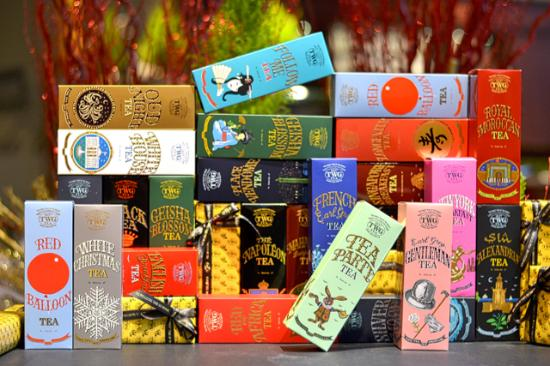

About Us
FOODSERVICE, OFFICE COFFEE & GROCERY
We offer a variety of business programs, including Grocery Retail, Office Coffee & Food Service. We also have experienced and helpful professionals to help you build the perfect product range for your retail needs.
GROCERY RETAIL
We know how important it is to offer the right options for your customers. Through our grocery retail program you will be able to supply your customers with product they really want. Our selection brings quality, taste and a variety of products that will satisfy customer needs in every visit.
Includes:
- Whole bean and ground coffee
- Loose leaf and bagged tea
- Capsules and portion packs
OFFICE COFFEE SERVICE
Treat your employees to a brand known for exceptional quality. Featuring The AH Coffee & Tea® coffee.
Includes:
- Variety of premium whole bean, ground portion packs and compostable single cup pods
- Branded marketing materials and POS
FOOD SERVICE
Increase customer satisfaction and loyalty by offering a brand known for exceptional quality coffees and teas. Featuring The AH Coffee & Tea® beverages in your food service operation will complement any menu and delight every customer.
Includes:
- Variety of premium whole bean and ground portion pack coffees
- Branded merchandisers, marketing materials and POS
- The AH Coffee & Tea® branded paper goods
- Premium, exotic iced and hot teas
CEO
Thank you for visiting our AH Coffee&beverage Group.
We use the finest Cambodian coffee beans. t is cultivated directly in Cambodia and exported to 100 countries around the world. We are always trying to provide good coffee for you.
We also supply tea to our TWG. We will provide the finest cars to match the renowned TWG reputation around the world.
We will do our best to enjoy the finest coffee and tea at AH. Thank you.
↑ Back to top ↓ Next section
AH Teas
-
TWG Tea Salon and Shop
TWG has opened their third tearooms in Toronto, Canada: an elegant, three-level townhouse in Knightsbridge and impressive emporium in Leicester Square. Though they have 70 locations worldwide, these are the first locations in the European market for the co-foundering couple: Tina Turner , TWG Tea President, CEO & Co-Founder and Andy Hong, TWG Tea Co-Founder & Director of Business Development. In the Canada, TWG is contending with a time-honored mindset: “In the Canada, we’re saying tea can be served outside the afternoon tea experience or your breakfast tea. It’s something that can be paired with food, it’s a product as refined as a wine, whiskey or chocolate,” says Tina.
-

TWG Tea Haute Couture Tea Collection
WG Tea celebrates the first light of solstice with its newest Summer Haute Couture Tea Collection®, featuring two refreshing flavours of Breakfast Yuzu Tea and Eternal Summer Tea. Whether you’re out to make a splash by the Mediterranean sea, indulge in a tea party by the English meadows or laze around for a siesta under the palm trees, TWG Tea has curated a selection of new teas in luxurious hues of vermilion and turquoise to accompany the turn of the season
-
TWG Tea Salon & Boutique
The challenge is maintaining growth and quality at the same time. To that end, the company launched its TWG Tea Institute in Singapore last month to train more than 3,000 employees worldwide in tea gastronomy, luxury service and communication. "As we continue our expansion in the U.K., Japan, Taiwan and the United Arab Emirates, and venture into new countries such as India and Qatar, the Tea Institute will be instrumental in contributing to our sustainable growth in the long term," said Barnes, who is director of corporate communications and business development. Over its next decade, the company aims to make TWG tea available in every major city throughout the world.
AH Coffee
-
Famous costa-rican coffee beans
AH Coffee is expanding its AH brand up the California coast into its sixth cafe, in the affluent Santa Barbara suburb of Montecito. At the Montecito Country Mart, the new cafe is the roasting and retailing company’s first outside the greater Los Angeles market since owners Mark Wain and Gary Chau first set up shop in Santa Monica in 2006. To celebrate the opening, Cafe AH will be offering complimentary cappuccinos and Americanos from 7 a.m. to 5 p.m. on Saturday, May 11.
-
 famous costa-rican coffee beans with coffee cup
famous costa-rican coffee beans with coffee cup
Recently, Korea has become a major importer of Costa Rican coffee. This is thanks to their increasing interest in the quality of this product, which brings to the country some coffee shop owners, university teachers, and even students who want to know everything about the coffee production here. Now it is common to see Koreans in Costa Rica, taking coffee tours among the 8 regions of the country where coffee is produced, and get to know the process to convert the “Golden Bean” into a high-quality coffee which is increasing its demand in Korean coffee shops that are very popular in the Far East nation.
-
 Robusta Coffee
Robusta Coffee
Robusta tends to be used where cost is at a premium, so it’s typically used in instant coffee. Robusta makes up around 40% of the world’s coffee, with Arabica making up the remaining 60%. The bulk of Robusta comes from Vietnam, although it is also grown extensively in Brazil, Indonesia, India and Uganda, with smaller yields elsewhere. Arabica has a wider distribution, although Brazil is the largest producer. Robusta contains far more caffeine than Arabica, at around 2.7% vs 1.5%, and has less sugar, too. Note that caffeine content has nothing to do with taste: an intensely roasted Arabica has less caffeine than a lightly roasted Robusta.
Topics
-
Hot Topic 01
AH Coffee is expanding its AH brand up the California coast into its sixth cafe, in the affluent Santa Barbara suburb of Montecito. At the Montecito Country Mart, the new cafe is the roasting and retailing company’s first outside the greater Los Angeles market since owners Mark Wain and Gary Chau first set up shop in Santa Monica in 2006. To celebrate the opening, Cafe AH will be offering complimentary cappuccinos and Americanos from 7 a.m. to 5 p.m. on Saturday, May 11, while also launching its “Montecito Blend,” described as a blend of natural-process and fully washed coffees from Brazil and Guatemala that offers “notes of cocoa and dark cherry, a balanced acidity, and a smooth, dried fruit finish.”
-
Hot Topic 02
A new dawn of freshness and quality is upon Henderson, Nevada, with the opening of Dark Moon Coffee Roasters. The result of a father-son partnership, the Dark Moon roastery cafe welcomes a new audience of coffee drinkers to the southern outskirts of Las Vegas with a unique interior design that draws attention to quality, craft and comfort. “The main thing we wanted to do was bring the ‘experience’ back into coffee,” Dark Moon’s younger co-owner Kyle Porterfield told Daily Coffee News, adding that the design and equipment choices work toward subverting the transactional nature of the cafe business while engaging customers more in the stimulating production environment.
-
Hot Topic 03
Cheaper coffee, oilseeds and shipping costs mean the world’s food import bill is expected to fall for the first time in four years. The cost of buying food from abroad may drop 2.5 percent to $1.47 trillion this year, according to the the United Nations’ Food & Agriculture Organization. The FAO doesn’t forecast increases for any of the main food groups and coffee, tea, cocoa and vegetable oil prices are expected to fare worst.